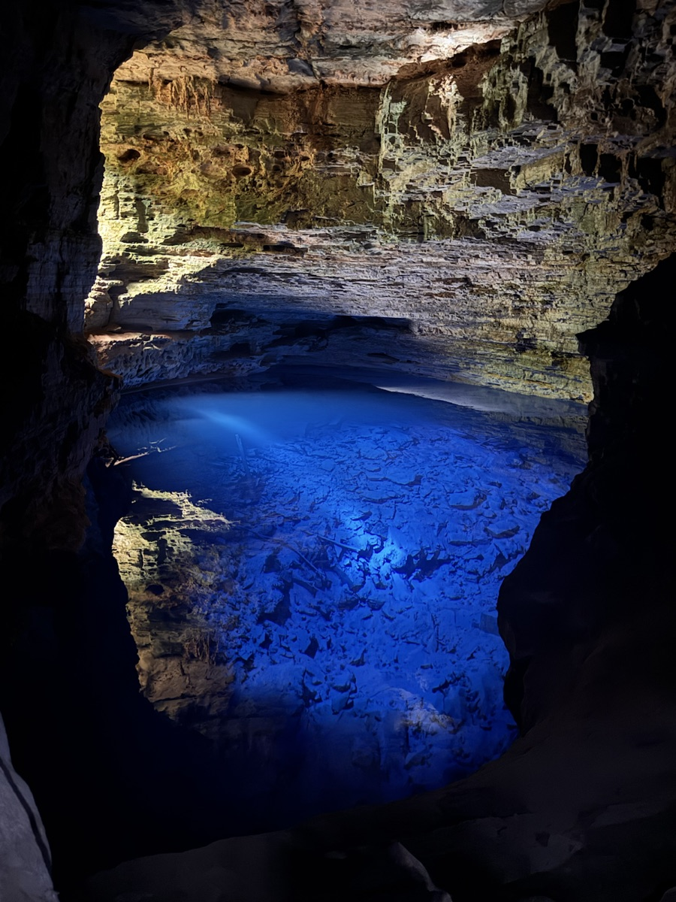
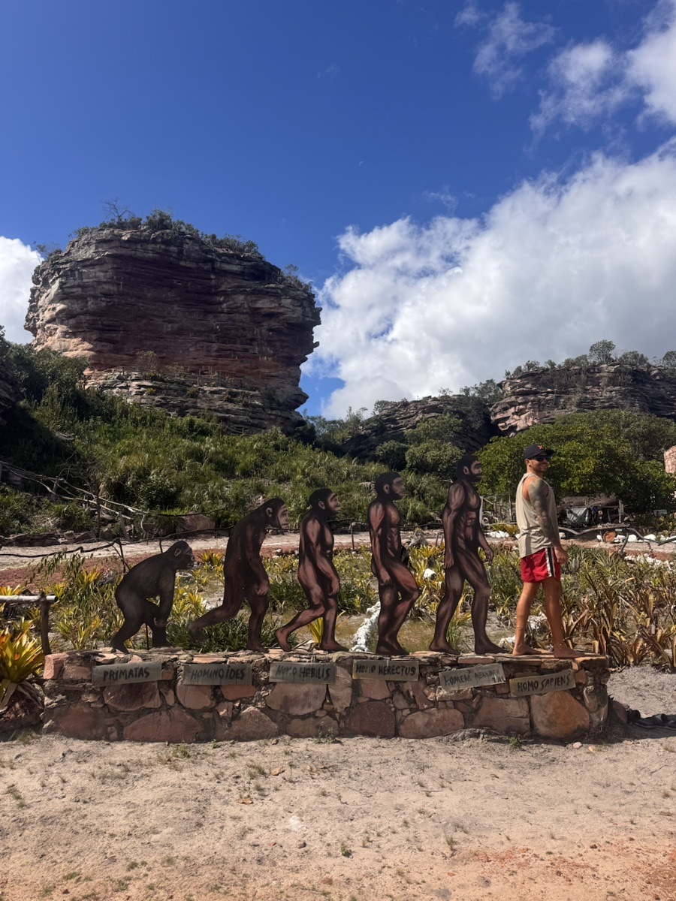
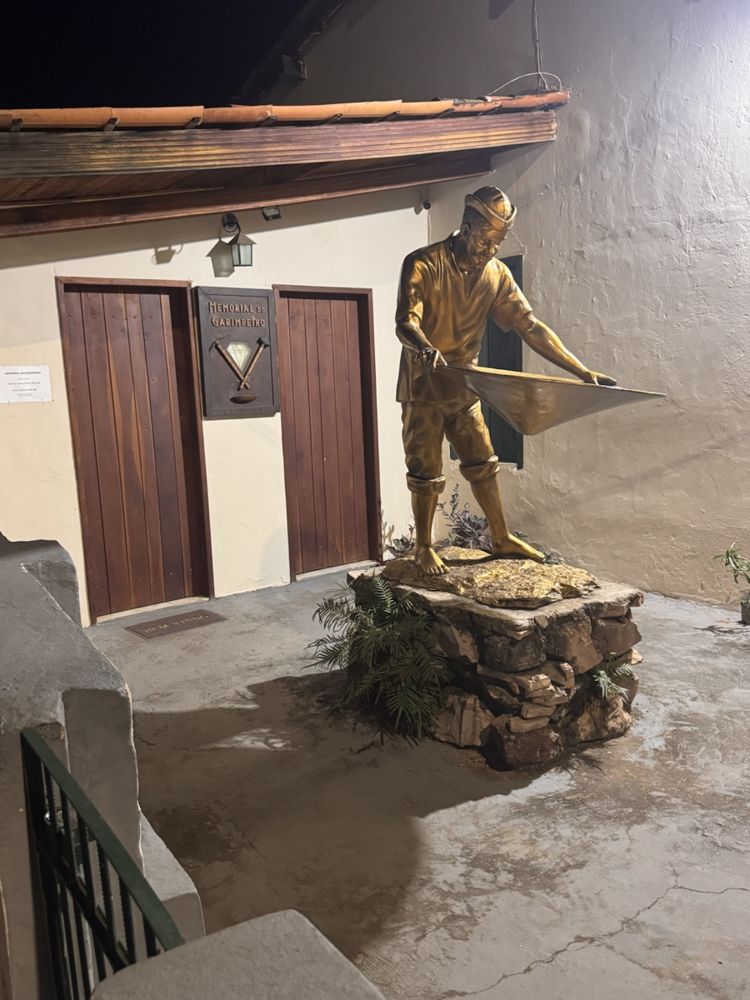
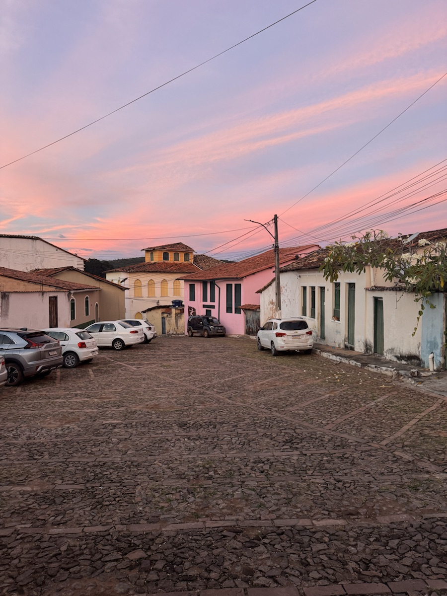
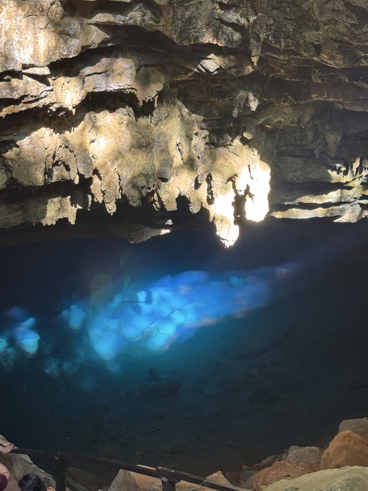
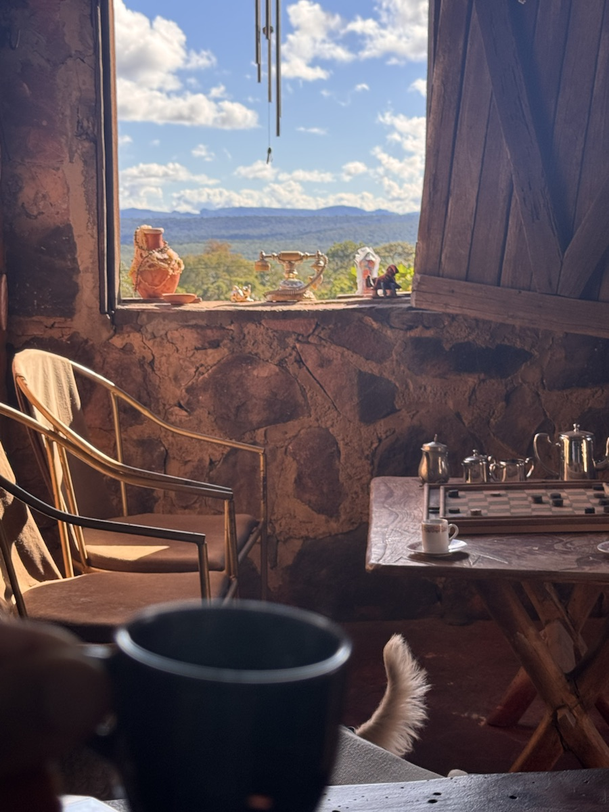
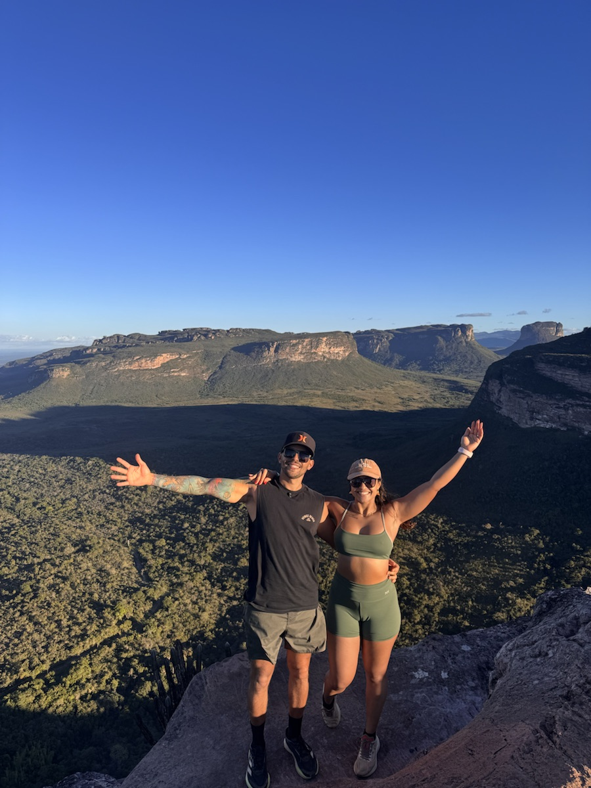
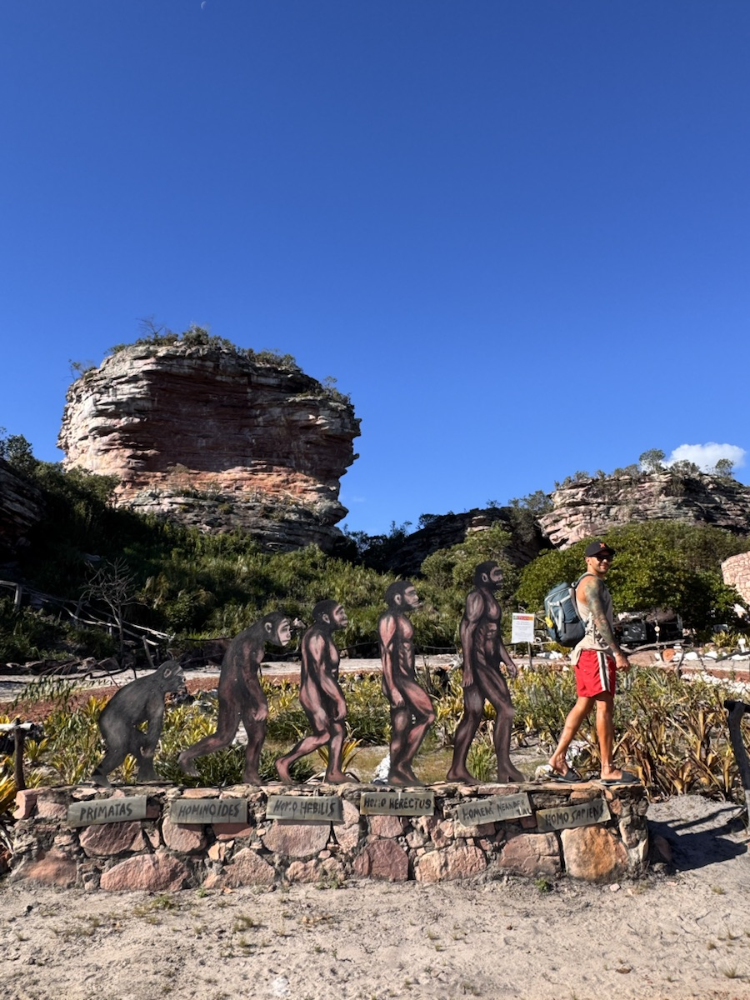
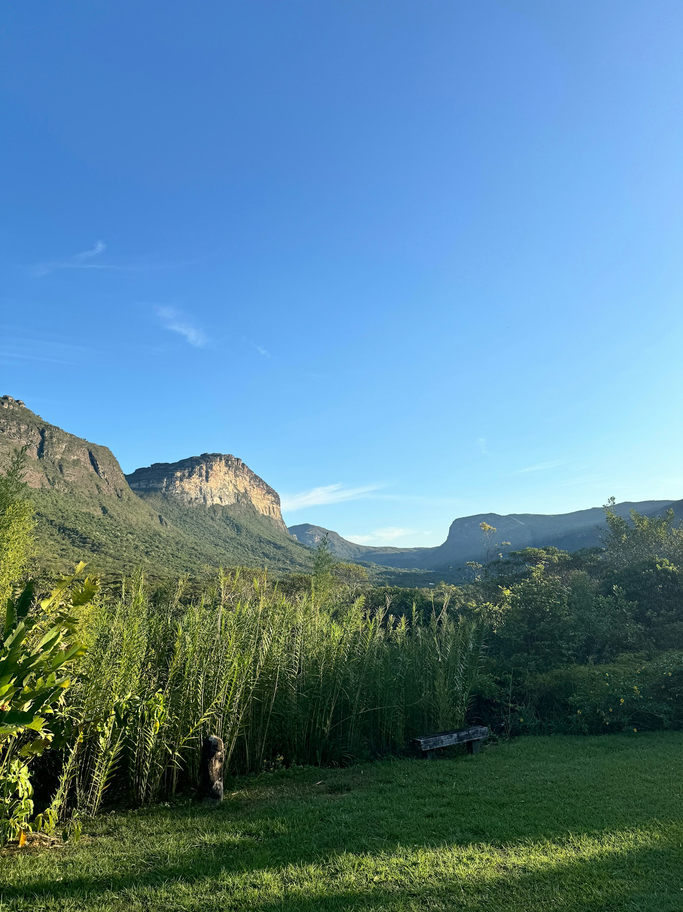
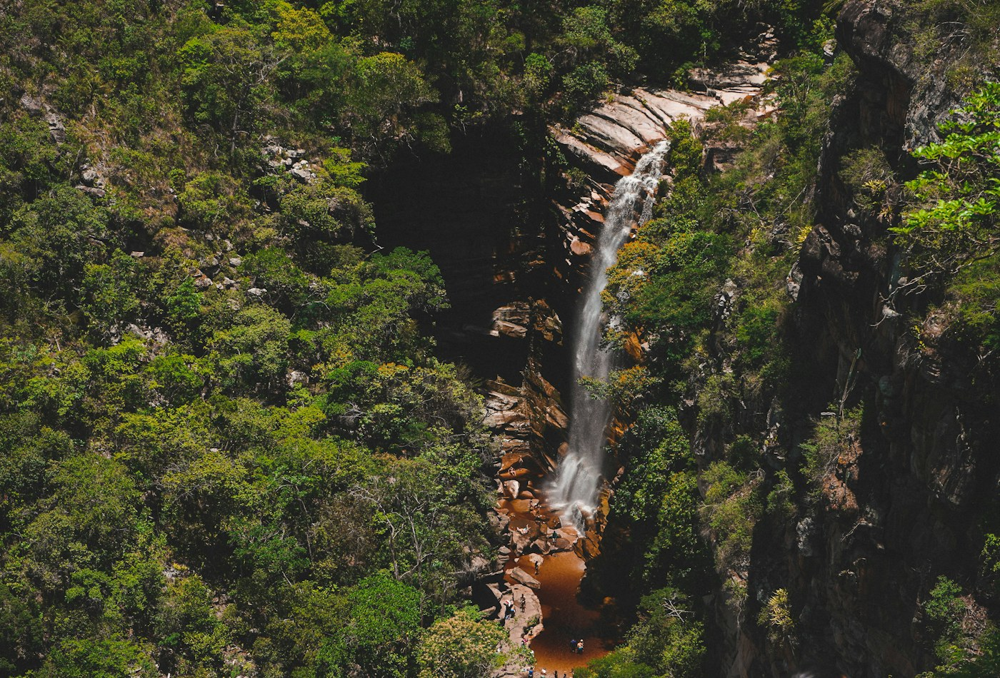

ECOTURISMO E AVENTURA
Chapada Diamantina
Cachoeiras, trilhas, poços cristalinos e paisagens monumentais em uma experiência feita no seu ritmo.
100% dos nossos guias são nativos da Chapada Diamantina.
Conhecer esta experiência →
A EXPERIÊNCIA
Uma imersão entre serras, água e história.
Você alterna caminhadas por paisagens monumentais, banhos em rios e momentos tranquilos na cidade de Lençóis. O roteiro pode combinar contemplação e aventura conforme o seu perfil.
Roteiro sugerido
Chegada e circuito do Serrano; Morro do Pai Inácio, Pratinha e Lapa Doce; Poço Azul, Poço Encantado ou Cachoeira da Fumaça.
O que pode estar incluído
- Transfers e passeios definidos na proposta
- Guias nativos, condutores e motoristas experientes
- Entradas e logística dos atrativos contratados
- Seguro aventura
O que não está incluído
- Aéreo e hospedagem, salvo quando indicados
- Refeições não previstas no roteiro
- Despesas pessoais
Datas, duração e serviços podem variar conforme disponibilidade e composição da viagem. A confirmação acontece antes da reserva.
Como funciona
Conte seu período, perfil, preferências e orçamento pelo WhatsApp. A Rud Viagens organiza uma proposta com roteiro, serviços e condições. O planejamento está incluído na contratação.
Quando acontece
As datas e a duração são combinadas na proposta, conforme disponibilidade e época da viagem. Os roteiros apresentados são sugestões para seu planejamento.
Informações importantes
Antes da reserva, confirme inclusões, exclusões, deslocamentos e o preparo necessário para as atividades. Durante a viagem, você tem contato direto com Rudnei pelo WhatsApp, com disponibilidade combinada antes do embarque.
Pronto para viver a Chapada?
Falar com a Rud Viagens no WhatsApp →FOTOS DO DESTINO
O que espera por você









